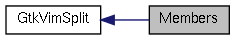

|
Cream-Browser unstable
|
|
Cream-Browser unstable
|
|  |
Functions | |
| GtkWidget * | GtkVimSplit::gtk_vim_split_get_focus (GtkVimSplit *obj) |
| void | GtkVimSplit::gtk_vim_split_set_focus (GtkVimSplit *obj, GtkWidget *nb) |
| void | GtkVimSplit::gtk_vim_split_add (GtkVimSplit *obj, GtkWidget *child, GtkOrientation o) |
| void | GtkVimSplit::gtk_vim_split_close (GtkVimSplit *obj) |
| void gtk_vim_split_add | ( | GtkVimSplit * | obj, |
| GtkWidget * | child, | ||
| GtkOrientation | o | ||
| ) |
| obj | A GtkVimSplit widget. |
| child | A Notebook widget. |
| o | Split orientation. |
Split the focused widget.
| void gtk_vim_split_close | ( | GtkVimSplit * | obj | ) |
| GtkWidget * gtk_vim_split_get_focus | ( | GtkVimSplit * | obj | ) |
| obj | A GtkVimSplit widget. |
Return the current focused notebook.
| void gtk_vim_split_set_focus | ( | GtkVimSplit * | obj, |
| GtkWidget * | nb | ||
| ) |
| obj | A GtkVimSplit widget. |
| nb | A Notebook widget. |
Set nb as the current focused notebook.
 1.7.4
1.7.4